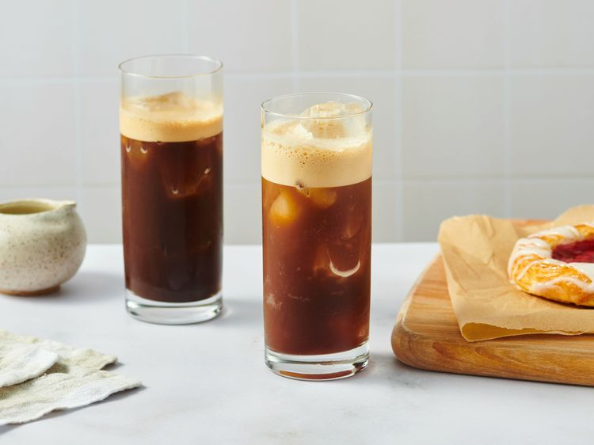

Freddo Espresso

Description
Freddo espresso is a delicious Greek-style iced coffee that is quick and easy to make at home.
Ingredients
- 2 shots freshly brewed espresso
- sugar(optional)
- ice as needed
Steps:
- Gather all ingredients.
- Pour espresso and sugar into a cocktail shaker. Add 4 ice cubes, cover, and shake until coffee is frothy and cold and ice has melted.
- Fill a glass with ice and pour shaken coffee over ice.